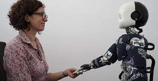
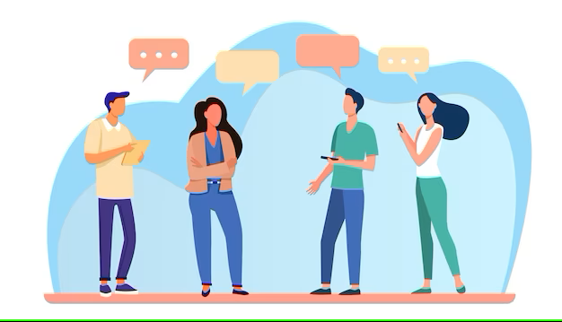
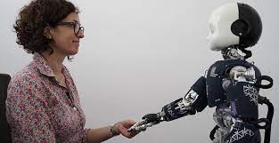
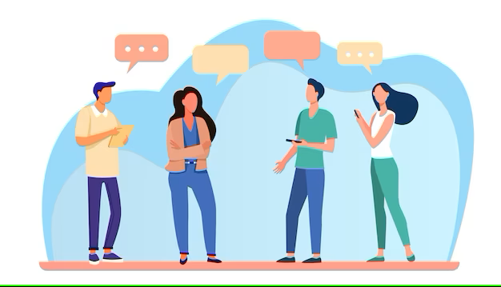

-
-
Visual / Spatial
Visual and spatial intelligence determines how well you process and understand your physical surroundings. Examples of this kind of intelligence being used by humans is driving a car in traffic, playing a team sport, or planning a space such as a room or garden.
Bodily / Kinesthetic
The ability to make physical movements and gestures. Good examples of how how humans use this intelligence would be dancing, drawing, or doing DIY.
Creative
Being artistic and creating artistic output. Painters are creative, as are musicians; humans use creative intelligence to visualise, plan, and create art.
Interpersonal
Communicating with others through verbal, written, or electronic means. Humans use interpersonal intelligence to manage relationships and exchange information with other humans. In many cases, this intelligence would include the reading of non-verbal communication, such as body language.
Intrapersonal
Looking inwards and reflecting on one's self. This might be understanding what is in someone's own best interest, or setting goals and ambitions for themselves.
Linguistic
Linguistics is the process of listening to or reading something, processing that information, and forming an answer or response. The response itself could be spoken or written. An example of this intelligence at work would being asked which side dish you might like at a restaurant or cafe.
Logical / Mathematical
Processing data to calculate a result, make a comparison, identify patterns, and see relationships. Examples might include searching for, and comparing insurance quotes from different providers, or finding out the date and times that a film is showing at the cinema.
Read about the different types of intelligence in the panel on the left. Which do you feel is better at tasks requiring those types of intelligence, computers or humans? Drag them onto the respective panel and see if you're right!
Human
Computer
 


